Particle Swarm Optimization
Introduction
Particle swarm optimization (PSO), first proposed by [EK95], is a population-based algorithm which intends for simulating the social behavior of a bird flock (swarm of particles) to reach the optimum region of the search space.
PSO is quite recent in the framework of geophysical data inversion ([SS07][YWT09]) and is not yet widely used like well-known global optimization methods such as Monte-Carlo ([MU49][MT95][MS02][SB08]), simulated-annealing ([RP06]) or neighbourhood algorithm ([Sam99a][Sam99b][Sam01]). However, it was successfully applied to surface-wave analysis ([STL+12][WR12]), traveltime tomography ([TPBoniger12][LNG16]), seismic refraction ([PMZ14]) and seismic wave impedance inversion in igneous rock ([YXP+17]).
([BVA07][BVA08][ZWJ15]).
Method
In PSO, individuals i, or particles, are characterized by a velocity vector 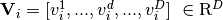 and a position vector 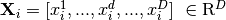 in D-dimensional solution space. All particles are initialized with random values at the beginning of the inversion process and the corresponding velocity vectors are set to zero.
The standard PSO update formulas are ([EK95]):
where 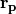 and are vectors of random values that induce stochacity ([SP16]),  is the cognitive parameter, 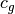 is the social parameter and 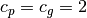 in most cases.
is the cognitive parameter, 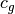 is the social parameter and 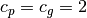 in most cases.
Classical improvements of PSO concern the control of the velocity vector through the use of an inertia weight  ([BSS+11]) or a constriction factor
([BSS+11]) or a constriction factor  ([SE98][Cle99][ES00]).
([SE98][Cle99][ES00]).
Note that the value of is directly related to the values of and such as:
where 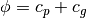 and 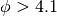. For 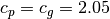, equation (4) is equivalent to equation (3) using 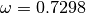 and 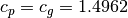.
Add pseudo-code image here
References
| [BVA07] | Alec Banks, Jonathan Vincent, and Chukwudi Anyakoha. A review of particle swarm optimization. part i: background and development. Natural Computing, 6(4):467–484, 2007. doi:10.1007/s11047-007-9049-5. |
| [BVA08] | Alec Banks, Jonathan Vincent, and Chukwudi Anyakoha. A review of particle swarm optimization. part ii: hybridisation, combinatorial, multicriteria and constrained optimization, and indicative applications. Natural Computing, 7(1):109–124, 2008. doi:10.1007/s11047-007-9050-z. |
| [BSS+11] | Jagdish Chand Bansal, PK Singh, Mukesh Saraswat, Abhishek Verma, Shimpi Singh Jadon, and Ajith Abraham. Inertia weight strategies in particle swarm optimization. In Nature and Biologically Inspired Computing (NaBIC), 2011 Third World Congress on, 633–640. IEEE, 2011. doi:10.1109/nabic.2011.6089659. |
| [Cle99] | Maurice Clerc. The swarm and the queen: towards a deterministic and adaptive particle swarm optimization. In Evolutionary Computation, 1999. CEC 99. Proceedings of the 1999 Congress on, volume 3, 1951–1957. IEEE, 1999. doi:10.1109/cec.1999.785513. |
| [ES00] | Russ C Eberhart and Yuhui Shi. Comparing inertia weights and constriction factors in particle swarm optimization. In Evolutionary Computation, 2000. Proceedings of the 2000 Congress on, volume 1, 84–88. IEEE, 2000. doi:10.1109/cec.2000.870279. |
| [EK95] | (1, 2) Russell Eberhart and James Kennedy. A new optimizer using particle swarm theory. In Micro Machine and Human Science, 1995. MHS‘95., Proceedings of the Sixth International Symposium on, 39–43. IEEE, 1995. doi:10.1109/mhs.1995.494215. |
| [LNG16] | Keurfon Luu, Mark Noble, and Alexandrine Gesret. A competitive particle swarm optimization for nonlinear first arrival traveltime tomography. In SEG Technical Program Expanded Abstracts 2016, pages 2740–2744. Society of Exploration Geophysicists, 2016. doi:10.1190/segam2016-13840267.1. |
| [MU49] | Nicholas Metropolis and Stanislaw Ulam. The monte carlo method. Journal of the American statistical association, 44(247):335–341, 1949. doi:10.2307/2280232. |
| [MS02] | Klaus Mosegaard and Malcolm Sambridge. Monte carlo analysis of inverse problems. Inverse Problems, 18(3):R29, 2002. |
| [MT95] | Klaus Mosegaard and Albert Tarantola. Monte carlo sampling of solutions to inverse problems. Journal of Geophysical Research: Solid Earth, 100(B7):12431–12447, 1995. |
| [RP06] | Nils Ryden and Choon Byong Park. Fast simulated annealing inversion of surface waves on pavement using phase-velocity spectra. Geophysics, 71(4):R49–R58, 2006. |
| [Sam99b] | Malcolm Sambridge. Geophysical inversion with a neighbourhood algorithm—ii. appraising the ensemble. Geophysical Journal International, 138(3):727–746, 1999. |
| [Sam01] | Malcolm Sambridge. Finding acceptable models in nonlinear inverse problems using a neighbourhood algorithm. Inverse Problems, 17(3):387, 2001. |
| [SS07] | Ranjit Shaw and Shalivahan Srivastava. Particle swarm optimization: a new tool to invert geophysical data. Geophysics, 72(2):F75–F83, 2007. |
| [SE98] | Yuhui Shi and Russell Eberhart. A modified particle swarm optimizer. In Evolutionary Computation Proceedings, 1998. IEEE World Congress on Computational Intelligence., The 1998 IEEE International Conference on, 69–73. IEEE, 1998. |
| [SB08] | Laura Valentina Socco and Daniele Boiero. Improved monte carlo inversion of surface wave data. Geophysical Prospecting, 56(3):357–371, 2008. |
| [SP16] | Dimitris Souravlias and Konstantinos E Parsopoulos. Particle swarm optimization with neighborhood-based budget allocation. International Journal of Machine Learning and Cybernetics, 7(3):451–477, 2016. |
| [TPBoniger12] | Jens Tronicke, Hendrik Paasche, and Urs Böniger. Crosshole traveltime tomography using particle swarm optimization: a near-surface field example. Geophysics, 77(1):R19–R32, 2012. |
| [YXP+17] | Haijun Yang, Yongzhong Xu, Gengxin Peng, Guiping Yu, Meng Chen, Wensheng Duan, Yongfeng Zhu, Yongfu Cui, and Xingjun Wang. Particle swarm optimization and its application to seismic inversion of igneous rocks. International Journal of Mining Science and Technology, 27(2):349–357, 2017. |